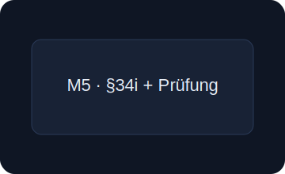

<section id="modules-4-5" style="max-width:1200px;margin:12px auto;padding:12px;">
  <div style="display:grid;grid-template-columns:repeat(auto-fit,minmax(220px,1fr));gap:16px;">
    <div style="border:1px solid #24324b;border-radius:14px;padding:14px;background:#0f1a2e;">
      
      <h3 style="margin:6px 0">M4 – Gutachter & Sachverständige (Gutachtenerstellung)</h3>
      <ul style="color:#aab3c2;line-height:1.5;margin:0 0 8px 18px">
        <li>Vergleichs-, Sach- und Ertragswertverfahren</li>
        <li>DIN, Beleihungswert, rechtliche Rahmen</li>
        <li>Übungs-Gutachten mit Feedback</li>
      </ul>
      <a href="#kontakt" style="display:inline-block;padding:8px 12px;border-radius:10px;background:#4f8cff;color:#fff;text-decoration:none;font-weight:600">Beratung zu M4</a>
    </div>
    <div style="border:1px solid #24324b;border-radius:14px;padding:14px;background:#0f1a2e;">
      
      <h3 style="margin:6px 0">M5 – Immobiliardarlehen (§34i) + Prüfungsvorbereitung</h3>
      <ul style="color:#aab3c2;line-height:1.5;margin:0 0 8px 18px">
        <li>1 Mo Lernen: Kreditarten, Bonität, Nachkundenprüfung</li>
        <li>1 Mo Prüfungsvorbereitung: Sachkundeprüfung</li>
        <li>Praxis: Tilgungsplan, Zinsrechner, Compliance</li>
      </ul>
      <a href="#kontakt" style="display:inline-block;padding:8px 12px;border-radius:10px;background:#4f8cff;color:#fff;text-decoration:none;font-weight:600">Beratung zu M5</a>
    </div>
  </div>
</section>
